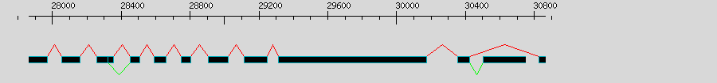
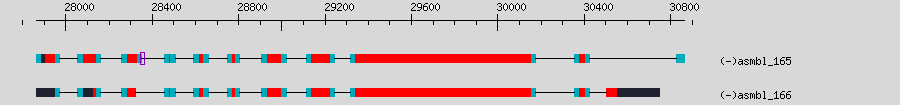
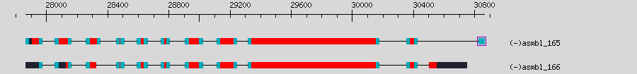

Alternative Splicing Report for
[assembly: asmbl_165, genome contig: 68716]
Splicing graph:

Individual variations captured
[show underlying transcripts responsible]
[show alignment text]
| accession | splice variation | coordinates | inferred from |
|---|
| asmbl_165 | alt_acceptor | 28353-28354(-) | asmbl_166 |
|  |
| |
| asmbl_165 | alternate_exon | 30825-30861(-) | asmbl_166 |
|  |
| |